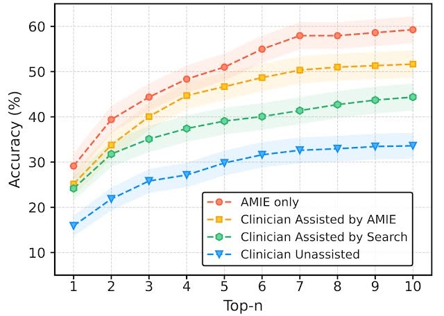

Can you use an AI chatbot to research a heart-health question? The group's admins say yes, with conditions. Louis Nervegna describes generative AI tools such as ChatGPT as very useful for researching health topics, but adds right away that they "often make mistakes", especially when citing references1. His practical rule is simple: treat AI as a fast first draft or a second pair of eyes, and check the underlying sources yourself.
In the group, AI has become a routine tool for three jobs: fact-checking claims made by online influencers, summarizing a body of evidence quickly, and checking the group's own posts for errors. It is also a news topic, with several shared items about AI systems that diagnose or analyze images in cardiology. This article covers how the admins use these tools, the pitfalls they flag, and practical habits for using them responsibly. It is based on the group's posts and does not endorse any specific product.
What AI is useful for
Fact-checking claims you hear online
The most common use in the group is fact-checking. Louis says you need to fact-check everything you hear about health online, because "most of it is nonsense", and recommends doing it with AI8. In another post he encourages people to use tools like Google Gemini to fact-check medical information they hear online, noting it is easy and free, and that the major AI tools are "getting tough to fool now" on cholesterol and statins9. He also notes that you can fact-check a claim such as the one comparing the insulin response to beef versus oatmeal or pasta by asking an AI directly10.
A worked example from the group shows how this looks in practice. Louis posted a claim about a statin trial and TG/HDL ratio, asked Gemini whether it was true, and the response called the statement scientifically inaccurate as a categorical rule: it said the ratio is a marker of insulin resistance and small dense LDL, but there is no landmark double-blind, placebo-controlled trial showing a "zero benefit" threshold at a ratio of 111. Louis presents this as a way to test a claim rather than as proof.
Summarizing the "totality of the evidence"
Louis argues that influencers cherry-pick single studies, and that a good scientific check considers the totality of the evidence. He once asked Claude to summarize the evidence on whether Paleolithic humans were carnivores; the reply described coprolites with plant remains, grinding stones, dental adaptations and isotope data, and concluded they were omnivores12. He describes this as a good way to do a basic scientific fact check. The same post is also a reminder of the limits: the summary named no specific papers, so it can only serve as an overview to be followed up12.
Group members have also shared AI-generated condensed summaries of other material, for example a ChatGPT summary of Ancel and Margaret Keys' 1975 Mediterranean diet book that Pankaj Kapahi generated and Louis passed on13. Louis has also shared a Gemini summary of a trial result alongside a post on resistance training14.
Checking your own writing
Louis also uses AI to check posts before and after sharing them. In one case he posted a text on ceramide and insulin resistance, then replaced his takeaway with a revised version from Gemini that "corrects some technical inaccuracies and overstatements" in the original, with the full fact-check placed in the comments15. In another case, he used Gemini to test his own explanation of how short trials understate the long-term benefit of statins, and encourages everyone to do likewise16. On a dairy and dementia post, he again put his own summary through Gemini and urged others to do the same to help ensure factual accuracy17. He also uses a standard prompt, shown in one post: "Please critique and fact-check this text for scientific accuracy. Do not include tables in your response."6.
Several of Louis's posts are labeled as written "in collaboration with Gemini AI", a disclosure habit that lets readers know which text was AI-assisted, for example on the genetics of statins and diabetes, on PCSK9 inhibitors versus statins, on hsCRP, on a plaque-reversal trial summary and on cocoa butter1819202122.
The pitfalls the admins flag
Hallucinated and misquoted references
Louis's clearest rule, posted as a group rule, is about references. Generative AI tools "can hallucinate citations that do not exist, or hallucinate information or quotes from references that are wrong." Anyone posting AI-generated content in the group is asked to look up the actual references the AI cites and to check what the AI says about them1. In plain terms, a "hallucination" means the model produces plausible-sounding but false content, such as a paper that does not exist.
Persuasive tone is not reliability
Louis shared a short video by Terence Tao on what he calls AI's plausibility problem, with the warning that generative AI tools "are designed to sound extremely convincing, even when they are wrong," and that you need to be extremely careful using them for medical decisions5. Fluent writing, in other words, says nothing about whether a claim is true.
AI can agree too readily
An observation from the group's own examples: in two of the shared fact-checks the AI's reply opened by endorsing the text it was shown. One begins "This is a great summary of the recent Swedish study" and another says the text "is scientifically accurate and aligns closely with the current consensus"617. The first of these appeared on an observational study in which Louis had already stressed that observational studies show association, not causation17. This does not prove the AI was wrong, but it is a reason to ask explicitly for a critique, as the prompt Louis uses does, rather than "is this right?"6. The Gemini fact-check on the ceramide post shows what a useful critique looks like, since it found specific overstatements15.
AI output is not itself evidence
When Louis explains that an elevated creatine kinase on a statin points to a real drug effect rather than a nocebo effect, he supplies his own reasoning and rough calculations, then adds a Gemini answer as supporting text, and advises speaking to a doctor23. The same approach is a good model: AI text sits beside the primary reasoning and the data, and does not replace them.
Don't swap AI for your cardiologist
In a 2024 post, Louis says that if you are at high risk of a heart attack, rule number one is to find a good cardiologist and listen to them, and not to gamble on social media guesses or single cherry-picked studies. If you want to try natural or alternative approaches, it is safest to add them to what your cardiologist suggests and not to replace it7. The same logic applies to chatbots: they help you prepare questions, not make decisions on your behalf57.
The three everyday uses, and the check the admins pair with each:
| Use | How the admins do it | The check |
|---|---|---|
| Fact-checking a claim | Paste the claim into a free tool such as Gemini and ask for a critique69 | Look up the references it cites and confirm what they say1 |
| Summarizing the evidence | Ask for the totality of evidence, as with Claude on Paleolithic diets12 | The summary named no papers, so follow up with primary sources12 |
| Checking your own writing | Run a post through Gemini, as Louis did with his ceramide text15 | Ask for criticism, since replies can open by praising the text617 |
| Posting AI-assisted text | Label it "written in collaboration with Gemini AI"1819 | Readers know which text was AI-assisted1819 |
AI inside cardiology and medicine
The group also follows news about AI used by clinicians. These items are shared as news, and some are explicitly not heart-specific.
- Google AMIE. Louis shared a note on Google's research AI for diagnostic reasoning. In one paper it matched or exceeded primary care physicians in simulated text-chat consultations with patient actors. In a second, on 303 challenging real-world medical cases, it outperformed clinicians when generating a differential diagnosis, and clinicians assisted by it improved. The shared text also claims clinicians did worse when assisted than if they let the AI work alone2.
- Microsoft MAI-DxO. A news item reports a "virtual panel" of AI agents that more than doubled physicians' accuracy (as measured with reference tools) on 304 complex New England Journal of Medicine cases and reached 80% versus 47% on typical emergency room cases, while ordering fewer, cheaper tests. The item itself cautions that getting a diagnosis right is only one step in care and that real clinical testing is still to come, planned at Beth Israel Deaconess in Boston3.
- Retinal imaging. In the CLAiR randomized trial of an AI algorithm analyzing retinal images, almost a quarter of patients without heart disease met guideline criteria for lipid-lowering therapy, based on a 7.5% 10-year ASCVD risk. Louis notes the AI tools are still in the research stage and imagines tracking disease in the future4.
- AI plaque analysis. Louis shared new American College of Cardiology guidance on AI-based quantitative coronary plaque analysis on CT angiography (tools such as Cleerly and HeartFlow). Unlike a calcium score, which only measures calcified plaque, the analysis characterizes all plaque types and can help follow treatment response24.
- Drug development. Louis comments that AI is speeding up early (preclinical) drug development at a fraction of the cost, even with free or low-cost tools. No evidence is cited in the post25.


These are reports of research and guidance, not proof that a consumer chatbot can diagnose you. The MAI-DxO coverage itself says this still has to be proven at scale3.
What this means for you
The posts are opinions of group admins, not medical advice. Taken together, they suggest these habits:
- Use AI to generate a first summary or to challenge a claim you heard, such as an influencer's statement8912.
- Look up every reference the AI gives you and check that the quote or number is really in it, since citations can be invented or misquoted1.
- Ask the AI for a critique, not a confirmation. Louis's prompt asks it to critique and fact-check a text for scientific accuracy6.
- Expect that AI will sometimes be wrong and sound sure. Louis says to be extremely careful before using it for medical decisions5.
- Put the primary sources first: trial names, journals and numbers should come from the paper itself, with AI used to help you read and organize them112.
- If you post AI-assisted text, say so, as Louis does with "written in collaboration with Gemini AI"1819.
- If you have heart disease or are at high risk, the group's admins recommend following a good cardiologist and treating AI answers as questions to bring to your appointment, not instructions7.
Frequently asked questions
Is it safe to rely on a chatbot for a health decision?
The group's guidance is no. Louis says generative AI tools are designed to sound extremely convincing even when wrong, and urges great care for medical decisions5. For high-risk people, he says to listen to a good cardiologist7.
What does it mean when an AI "hallucinates" a reference?
It means the tool cites a paper that does not exist, or attributes to a real paper a quote or finding that is wrong. Louis asks members to look up the actual references before relying on, or posting, AI content1.
How do I fact-check an online health claim with AI?
Louis suggests pasting the claim or text into a tool such as Gemini and asking for a critique, using a prompt like "Please critique and fact-check this text for scientific accuracy"69. Then check the sources it names yourself1.
Can AI really diagnose better than doctors?
Reports shared in the group say research systems such as AMIE and MAI-DxO matched or beat physicians in specific studies of simulated chats and published cases23. These are research results, and the Microsoft coverage notes that clinical testing and wider proof are still ahead3.
Does AI have a role in tracking heart disease?
Possibly. The ACC guidance on AI plaque analysis on CT angiography and the CLAiR retinal imaging trial point toward AI-assisted risk estimation and treatment tracking, with the retinal approach still at the research stage424.